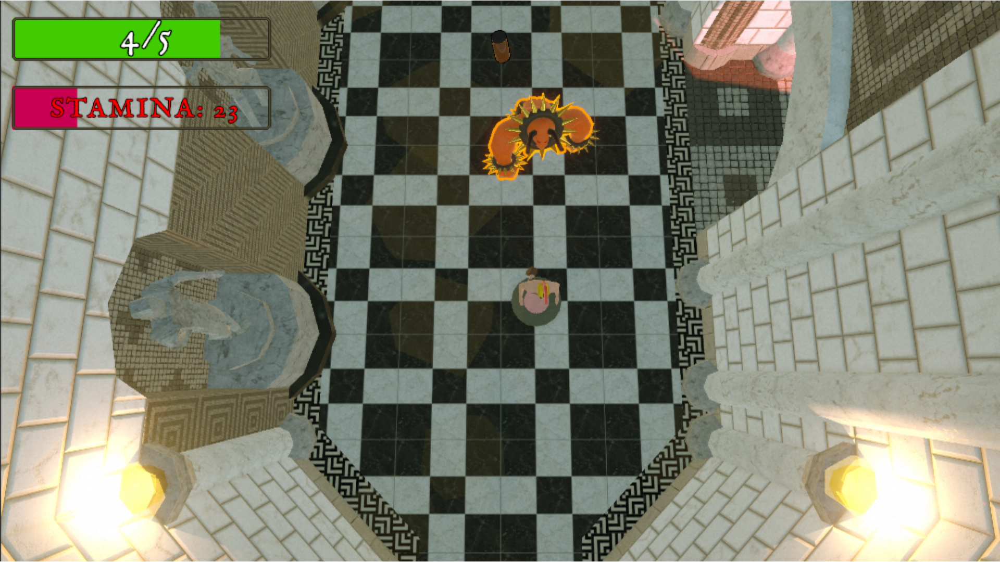
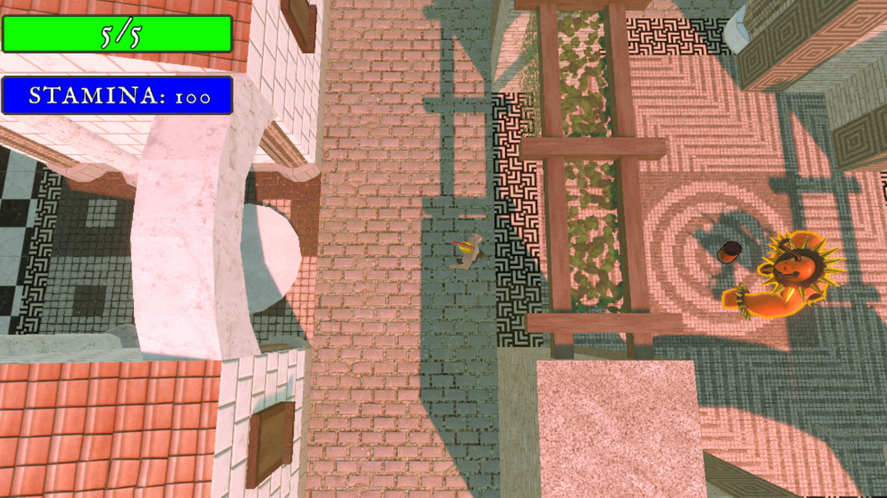
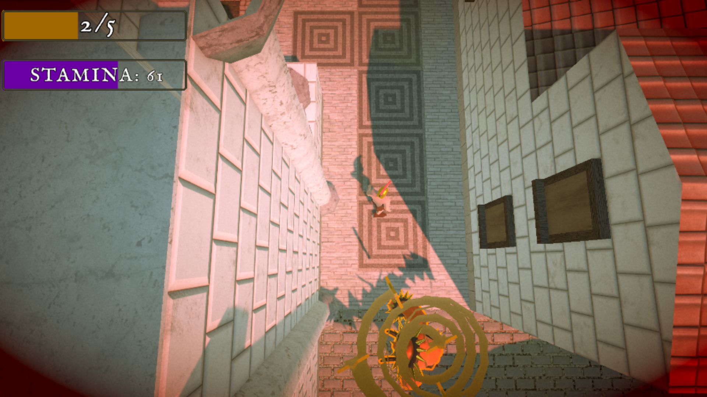
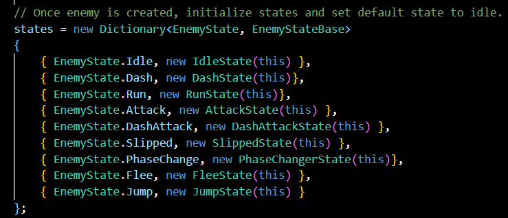
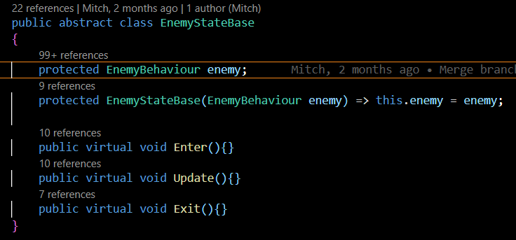
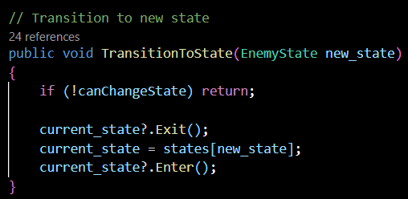
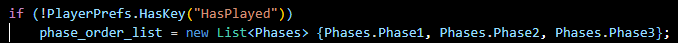
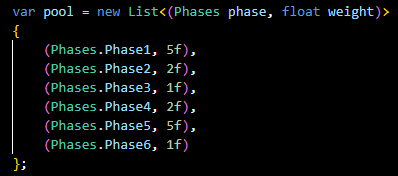

Description:
Play as a copy of Theseus. Run around in a maze, having to defeat the very Minotaur in Tartarus. Over and over again. The soul of the Minotaur can't rest. All it can do is chase the player and try to outsmart you.
Navigate the beautifully tiled halls of an ancient labyrinth, where every mosaic corridor could be your last. Manage your stamina wisely, running won't save you forever.



The Enemy behaviour I created within this game, I am quite proud off. Despite the demo version on Itch not having it. Within the Steam Version of the game, after you defeat the boss for the very first time.
State Machines:
How I got the State machine was quite simpler then what you might think. I created an main enemy behaviour script where the states are being stored unto a dictionary with the enum pointing to which state is on. A dictionary provides direct lookup from a state identifier to its corresponding state instance, which keeps the state machine independent of a long conditional chain or manually indexed collection.

Those states are constructed with a inherited abstract base state called the EnemyStateBase with the functions of enter, update and exit.

With this base, I would be able to create other states which would be able to communicate with each other. But to truly transition with the other states. I created in the Enemy behaviour script an transition to state, which would transition the behaviour of the enemy.

Phases:
I created an randomization function of phases. At the first play session. It would just take the first three phases and places them into the list which gets later on used to randomize the phases.

After the first play session, an randomized pool gets assigned unto the list. Some of the phases are more likely to be placed right in front unto the phases list.

The other things I've worked on this project are the following which I don't fully want to go in depth, since that would be too much:
- Cutscene Feature
- Camera Shake Feature
- Enemy Phases 1-6
- Steam Achievement Integration
- Door interaction and state synchronization
- Damage Feedback System
- Shader Work
- Partial Music Creation
- Sound Effect creation
The reason why I actually placed this game unto Steam directly was because I thought it had a lot of potential with the mechanic of this game, which was to change the pool of phases each run after you did your first run. It grants the player room with experimentation. It makes every single boss encounter different, making it repeatable to play.